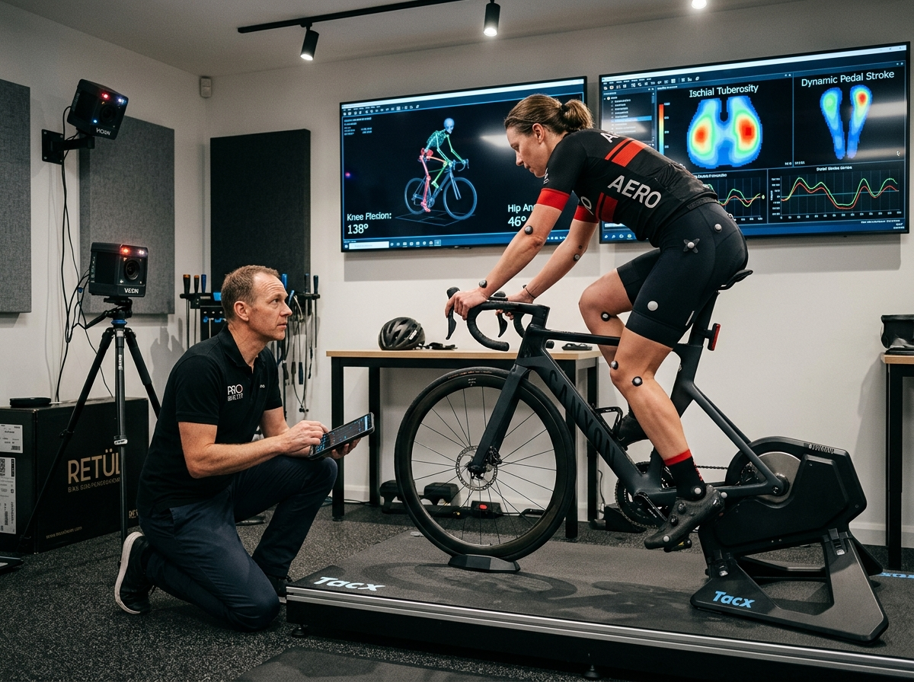
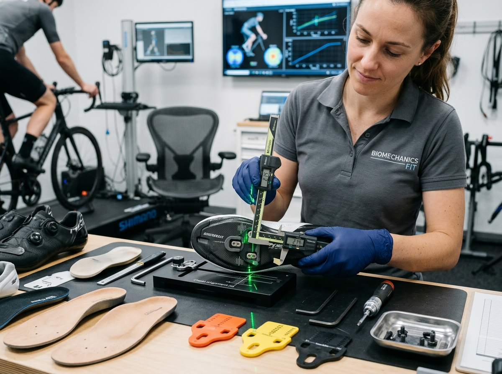
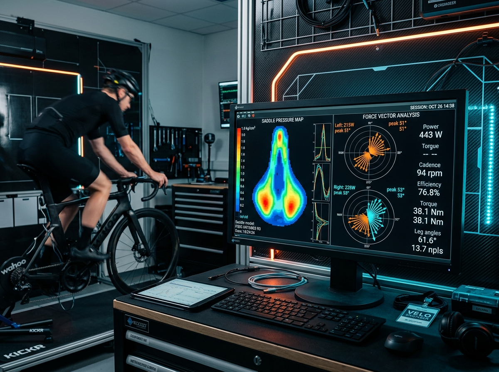
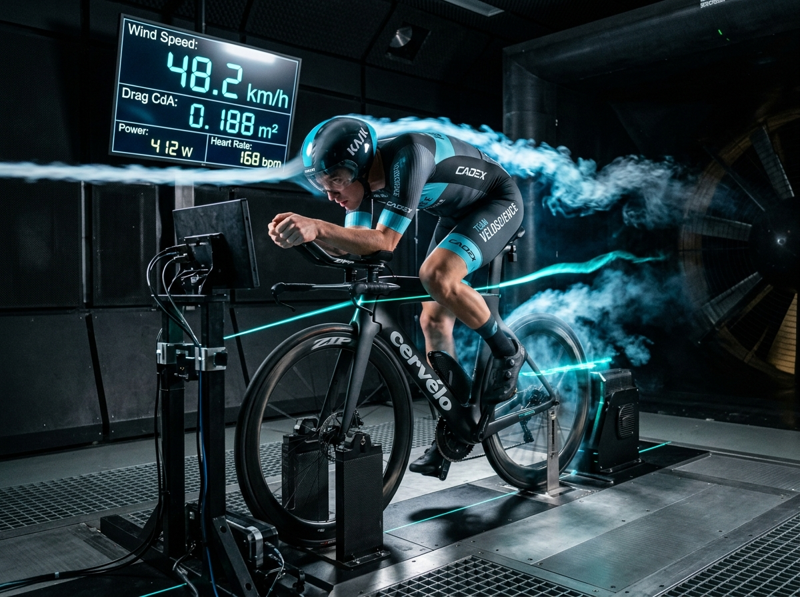
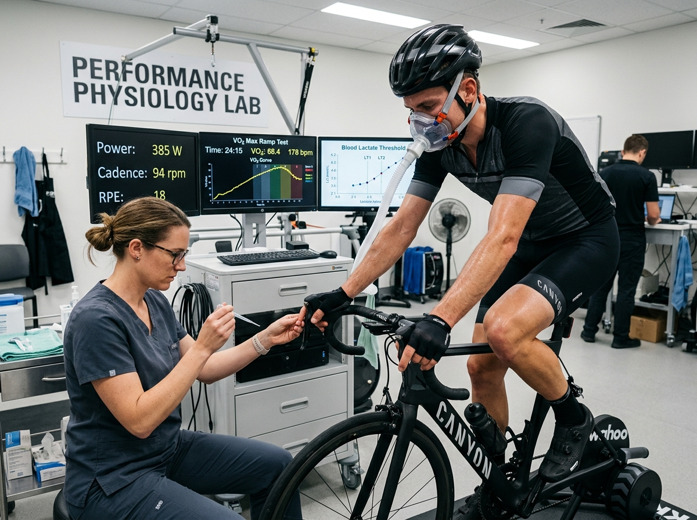
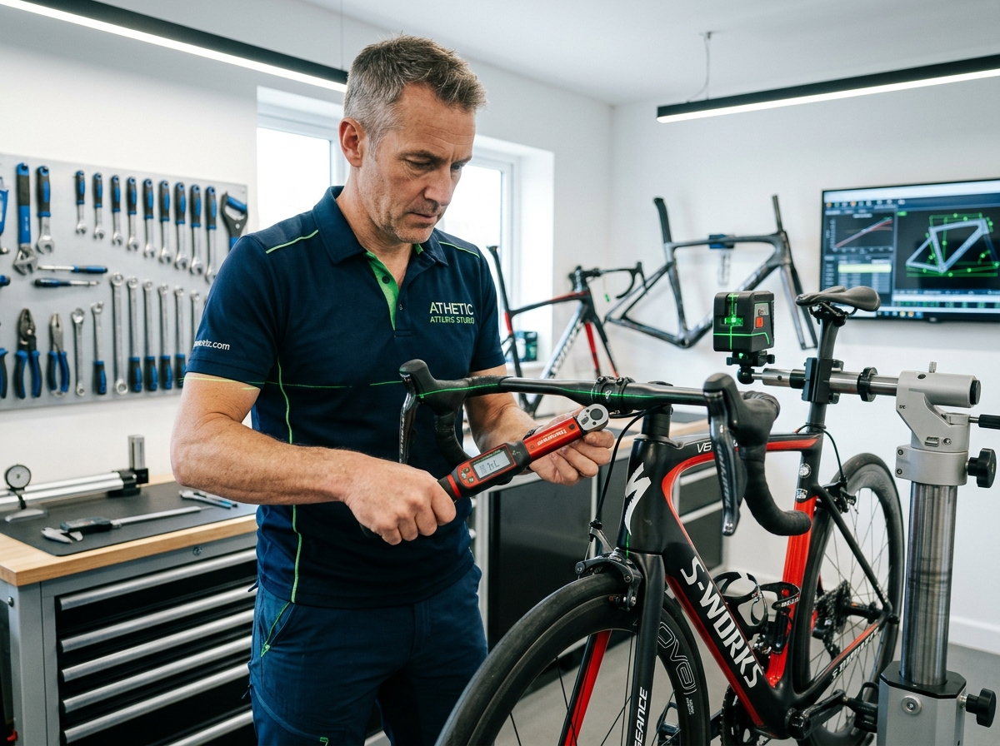

Biomechanical Diagnostic Services
We merge physiotherapy clinical screenings with 3D infrared kinematic telemetry and aerodynamic sensors. Every session is designed to eliminate neurological impingement, stabilize your pelvis, and maximize sustained mechanical wattage.
Specialized Fitting & Performance Protocols
Every athlete presents unique pelvic anatomy, hip range of motion, and spinal mechanics. Explore our specialized clinical services designed for road racers, gravel grinders, triathletes, and cyclists seeking pain-free power.

Dynamic 3D Kinematic Motion-Capture Fit
Our premier fitting protocol for Road, Gravel, and Endurance cyclists. Using 240Hz infrared optical motion capture, we track 16 anatomical joint landmarks simultaneously in three-dimensional space while you pedal under real-world wattage resistance.
We dial in your knee flexion angle (calibrated between 37°–40° at bottom dead-center), optimize saddle height and fore/aft setback to eliminate patellar shear stress, and adjust stem reach, handlebar width, and brake hood rotation to relieve cervical and lumbar compression.

Laser Cleat Alignment & Custom Footbeds
The foot-pedal interface is the sole point of active mechanical propulsion on the bicycle. Sub-optimal cleat placement creates lateral knee drift, foot numbness, hot spots, Achilles tendon strain, and lost wattage.
Using high-frequency green crosshair lasers and digital caliper profiling, we align your cleats exactly over the 1st and 5th metatarsal heads with calibrated rotational float. We mold custom carbon-composite insoles to support the medial longitudinal arch and install varus/valgus canting shims to ensure true vertical knee tracking.

GebioMized® Dynamic Saddle Pressure Mapping
Saddle discomfort is the number one cause of abandoned rides and chronic pelvic rotation. Guessing saddle shapes by trial-and-error costs hundreds of dollars in wasted components and causes chronic pudendal nerve compression.
We slip a paper-thin, wireless 64-sensor calibrated GebioMized sleeve over your saddle that records dynamic pressure distribution at 200Hz. We visualize pubic ramus loading, ischial tuberosity (sit bone) contact, and pelvic tilt live on our laboratory monitors. We test curated saddles from our 40+ test library until pressure peaks drop below clinical thresholds and pelvic symmetry reaches 50/50.

Aero TT & Triathlon Cockpit Precision Fit
Over 80% of total resistance at race speeds is aerodynamic drag (CdA). However, an ultra-low position is useless if it closes your hip angle, crushes your lungs, or ruins your run split off the bike.
Our aero fitting protocol is engineered for Kona qualifiers, 70.3 racers, and UCI time trialists. We calibrate aerobar extension length, stack risers, arm cup tilt angle (10°–15° high-hands tuck), basebar reach, and saddle forward tilt. We protect hip clearance (ensuring greater than 45° open hip angle at top dead-center) to allow diaphragmatic breathing and save your running legs.

Metabolic VO2 Max & Lactate Threshold Testing
True performance velocity requires harmonizing clinical bike geometry with your internal cardiopulmonary engine. Generic FTP percentage formulas fail to identify your real metabolic turning points.
Under the supervision of our sports physiologist, you perform a step ramp test on an ergometer wearing a medical-grade breath-by-breath gas analysis mask. We measure oxygen consumption (VO2), carbon dioxide output (VCO2), respiratory exchange ratio (RER), and blood lactate accumulation via micro-samples. This pinpoints your exact Aerobic Threshold (LT1), Anaerobic Threshold (LT2), and FatMax burning zone.

Pre-Purchase Frame Geometry & Sizing CAD
Investing thousands of dollars in a new dream bike only to discover the head tube is too tall, the reach is too stretched, or the seatpost lacks setback is heartbreaking and costly.
Before you order, we determine your optimal Stack, Reach, Saddle Setback, and Cockpit Coordinates on our motorized dynamic sizing simulator. We cross-reference your dimensions against our proprietary database of over 1,200 commercial frames (Specialized, Trek, Pinarello, Cervélo, Colnago, Canyon, BMC). We specify the exact frame size, headset cone spacer stack, stem angle, and crank length required.
Diagnostic Instrumentation In Our Lab
We operate industry-gold-standard diagnostic hardware calibrated monthly to aerospace tolerances.
240fps HD Cameras
Multi-angle high-speed shutter cameras eliminate optical distortion for frame-by-frame joint tracking.
GebioMized Matrix
Wireless calibrated saddle mat with 64 sensor cells delivering continuous force mapping at 200Hz.
STT 3D Infrared
Spatial optical kinematic tracking of active LED markers with 0.1mm volumetric coordinate accuracy.
Wahoo KICKR v6 Rig
Direct-drive laboratory ergometer measuring isolated dual-leg power accuracy within +/- 1%.
What To Bring & Service FAQ
To ensure maximum precision from your session, please review these key preparation guidelines.
Rider Prep Checklist
-
Your Bicycle: Clean drivetrain and functional seatpost clamp.
-
Cycling Kit: Fitted bib shorts and tight jersey for optical marker tracking.
-
Cycling Shoes & Cleats: Inspect for excessive wear or loose bolts.
-
Medical History: Any prior spinal, hip, knee surgeries, or fractures.